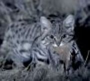
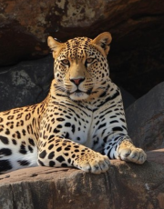
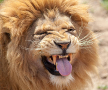
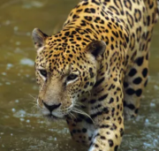
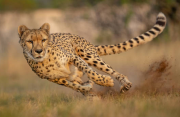
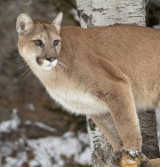
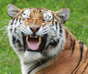

Deadliest Cats
| Cat: |
Hunting Success Rate: |
Habitat: |
Shoulder Height: |
Body & Tail Length: |
Activity: |
Conservation Status: |
Visual Description: |
| Black Footed Cat |
60% |
South Africa, Namibia, Botswana, Parts of Zimbabwe & Angola |
Less than 25 cm |
1.1-1.7 ft |
12-20 cm |
Strictly Nocturnal |
Vulnerable |
 |
| Leopard |
38% |
Africa, Asia & Middle East |
57-64 cm |
6 ft. |
60-110 cm |
Nocturnal/Crepuscular |
 |
| Lion (Panthera Leo) |
20-30% |
sub-Saharan Africa in Savannas, Grasslands, Open Woodlands & Scrub |
100-125 cm |
5.6-8.3 ft |
60-100 cm |
 |
| Jaguar (Panthera Onca) |
50-60% |
Mexico, Central America, South America, Amazon |
63-76 cm |
3.7-6.1 ft |
45 cm |
Near Threatened |
 |
| Cheetah (Acinonyx Jubatus) |
40-50% |
Open savannas, grasslands, dry forests, and semi-deserts. Eastern and Southern Africa |
67-94 cm |
3.6–4.9 ft |
60-84 cm |
Primarily Diurnal |
Vulnerable |
 |
| Mountain Lion (Puma Concolor) |
30-35% |
Canada through the U.S., Mexico, Central America, South America |
60-90 cm |
3.4-5.9 ft |
68-96 cm |
Nocturnal/Crepuscular |
Least Concern |
 |
| Tiger (Panthera Tigris) |
5-10% |
Diverse - India, Bangladesh, Nepal, Bhutan, Russia (Siberia), China, Myanmar, Thailand, Malaysia, and Indonesia (Sumatra) |
80-110 cm |
5-10.2 ft |
72-109 cm |
Endangered |
 |